Chapter 3 Sequences, limits and series
3.1 Sequences
Definition 3.1 (Sequence) A sequence is a function \(f : \mathbb N \rightarrow \mathbb {R}\).
In other words, it is a function whose domain is the natural numbers and whose domain is the real numbers.
Notation: \(f(n),n= 1,2,3,...\)
The following notation is also often used: \(({a}_{n}) _{i \in \mathbb{N} }\), where \(a_n=f(n)\)
The elements of the domain are called indices (singular: index).
Properties of interest are:
- convergence,
- whether a sequence is bounded or not,
- monotony.
The concept of convergence is fundamental for various applications and concepts, e.g.
- in financial mathematics;
- in analysis (continuity, differential quotient).
Example 3.1 (Number sequences in the business context)
New customers In a company, the monthly customer additions in the first quarter of 2022 are \(a_1=120,560, \ a_2=133,847\) and \(a_3=123,432\). It is a finite sequence of numbers, with real numbers assigned to the months of January (1), February (2) and March (3).
Employees The number of employees increases monthly by \(2\) %. Starting from March 2022 (\(a_0=128,432\)), we then have the following sequence members (unrounded): \(a_1=128,432.00 \cdot 1.02 =131,000.64\) (April)
\(a_2=131,000.64 \cdot 1.02 =133,620.65\) (May)
\(a_3=133,620.65 \cdot 1.02 =136,293.07\) (June)
In this example we have the special feature that you can calculate the individual members of the sequence. The functional rule for the nth element of the sequence applies:
\(a_n=128,432 \times 1.02^n\)
If we put \(n=3\) (for the month of June), then we have \(128,432 \cdot 1.02^3\), i.e. \(136,293.07\). Such a sequence, which satisfies a functional rule, is also called a geometric sequence (see below). Note that a functional relationship cannot be specified for every sequence.
Auch reine Zahlenfolgen werden meist mittels einer Funktionsvorschrift angegeben.
Example 3.2 (Sequences of numbers) 
Observations:
The terms in the sequences \((1/n)_{n\in \mathbb N}\) and \((-1/n)_{n\in \mathbb N}\) approach zero; they have a limit.
Although no element in the sequence takes on the value zero, the limit value is zero.
The other two sequences do not approach any finite value.
Exercise 3.1 (sequence members) Find the first ten terms of each of the given sequences:
- \(f (n) = 5 + 1/n\)
- \(f (n) = 5n/({2}^{n})\)
- \(f (n) = ({n}^{2} + 2n)/n\)
- \(f (n) = 5 − 1/n\)
- \(f (n) = n/(n + 1)\)
- \(f(n) = 3+(-1)^n\)
- \(f (n) = 3 + [(−1)^n(1/n)]\)
Hint: Insert \(n=1;2;3;4;...10\) to determine the first 10 terms.
Answer
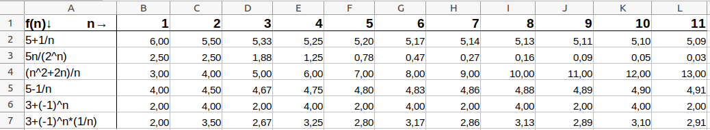
Frage:
3.2 Convergence of sequences
Convergence of a sequence means that the sequence terms \(a_n = f (n)\) come “arbitrarily close” to a unique finite value, its limit value (also: \(\lim\)), if \(n\) is “large enough”.
More formally: convergence means that the distance \(|a_n − a|\) between the following terms \(a_n, n = 1,2, ...\) and the limit \(a \in \mathbb{R}\) becomes arbitrarily small with increasing \(n\), i.e.:
\(|a_n − a| < \varepsilon\), for arbitrarily small \(\varepsilon > 0\), if \(n\) tends to infinity (\(n\rightarrow \infty\)).
A sequence with a limit converges.
A sequence that does not converge diverges.
Notation: If the sequence \(a_n, n = 1,2, ...\) converges to the limit \(a\), then we write:
\(\lim \limits_{n \rightarrow \infty } a_n=a\) or
\(a_n \rightarrow a\) for \(n \rightarrow \infty\).
3.2.1 Convergent sequences and their limits
Definition 3.2 (limit) The sequence \((a_n) _{n\in \mathbb N}\) has the limit \(a \in \mathbb {R}\), if for each any \(\varepsilon > 0\) an index \(N\) exists such that:
\(|a_n − a| < \varepsilon\), for all \(n > N\).
A sequence with a limit is called convergent, and the limit is written as
\(\lim\limits_{n \rightarrow \infty } a_n=a\).
or:
\(a_n \rightarrow a\) for \(n \rightarrow \infty\).
Example 3.3 (Checking convergence) We examine the sequence \((a_n) _{n\in \mathbb N}\) with \(a_n = 1/n\).
First, choose \(\varepsilon = 0.01\). Then, for each \(n > 100\) holds \(|a_n − 0| < 1/100 = 1/100 = 0.01 = \varepsilon\).
So the distance of the following terms \({a}_{101}, {a}_{102}\) from \(0\) is smaller than \(\varepsilon = 0.01\).
Further, check the above property for \(\varepsilon= 0.002\) and \(n > 500\).
In general, for any \(\varepsilon > 0\): from \(n > 1/\varepsilon\) follows \(|a_n − 0| = 1/n < \varepsilon\).
Hence \((1/n) _{n\in \mathbb N}\) converges to \(0\).
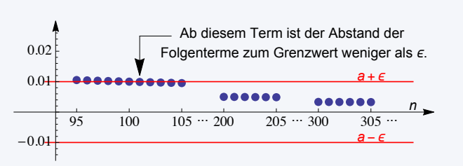
Example 3.4 (Some convergent sequences and their limits)
\(\lim \limits_{n \rightarrow \infty } \frac{1}{n} =0\)
\(\lim \limits_{n \rightarrow \infty } \frac{n}{n+1} =1\)
\(\lim\limits_{n \rightarrow \infty } c^n =0\), for \(c < 1\)
\(\lim \limits_{n \rightarrow \infty } e^{-n} =0\)
\(\lim \limits_{n \rightarrow \infty } e^{-1/n} =1\)
3.2.2 Bounded sequences
Definition 3.3 (Bounded sequence) A sequence is bounded if there is a number \(K > 0\) such that an index \(N\) exists with \(a_n < K\) for all \(n > N\) (bounded from above) and
\(a_n > −K\) for all \(n > N\) (bounded from below).
Otherwise the sequence is unbounded.
A sequence is bounded if and only if there is a number \(K > 0\) such that an index \(N\) exists with
\(|a_n| < K\), for all \(n > N\).
Graph
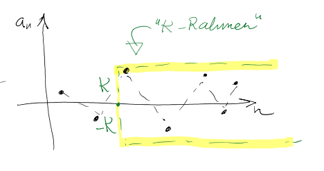Examples:
- \(a_n = 2n, \ n = 1,2,3, ...\) is unbounded because it is not bounded from above;
Graph
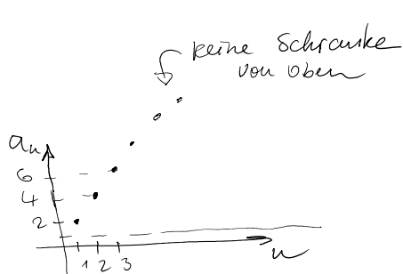- \(a_n = −n^2 , \ n = 1,2,3, ...\) is unbounded because it is not bounded from below;
Graph
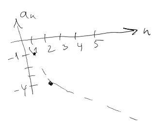- \(a_n = (−2)^n , \ n = 1,2,3, ...\) is not limited from below or above;
Graph
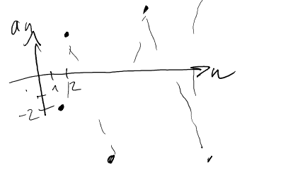- \(a_n = 1/n, \ n = 1,2,3, ...\) is bounded;
Graph
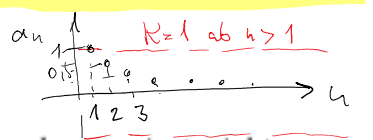- \(a_n = (−1)^n , \ n = 1,2,3, ...\) is bounded but does not converge.
Graph
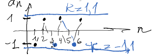There is the following relationship between the bounded sequence and their convergence properties.
Theorem 3.1 (Boundedness of convergent sequences) Every convergent sequence is bounded.
Proof
Consider a convergent sequence \((a_n)\) with limit \(a<\infty\). With the triangle inequality it follows that \(|a_n|=|a_n-a+a|\leq |a_n−a|+|a|\)
Due to the convergence of \((a_n)\) there is in particular a natural number \(N\), so that \(|a_n−a|\leq 1\) for all \(n\geq N\). We thus get the estimate:
\(|a_n|\leq 1+|a|\) for all \(n\geq N\).3.2.3 Divergent sequences
Definition 3.4 (Divergent sequences) A sequence with no limit diverges.
A distinction is made between the following forms of divergence:
- Definite divergence:
\(\lim _{n\rightarrow \infty} a_n = \infty\) or \(\lim _{n\rightarrow \infty} a_n = -\infty\).
Examples: \((n) _{n\in \mathbb N}\), \((n^k) _{n\in \mathbb N}\), for \(k > 0\), \(( e^n) _{n\in \mathbb N}\), \((\ln(n)) _{n\in \mathbb N}\)
Graph
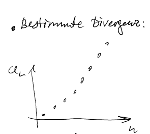- Indefinite divergence:
the sequence is not convergent, nor does it grow (fall) above (below) any limit.
Examples: \((\sin(n)) _{n\in \mathbb N}\), \((-1^n) _{n\in \mathbb N}\)
Graph
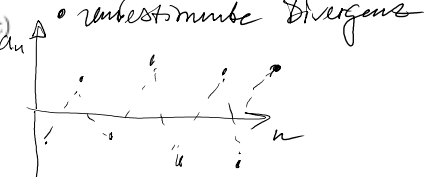The sequence \((-1^n) _{n\in \mathbb N}\) diverges because for \(\varepsilon > 0\) small enough, no candidate for a limit can be found:
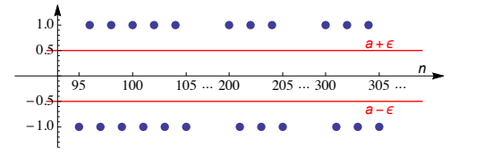
3.3 Properties of sequences
We have already seen that some sequences, like \((1/n)_{n\in \mathbb N}\), are convergent and some, like \((-1)^n_{n\in \mathbb N}\), are divergent. Now we consider more complex sequences, which are defined as the sum or product of two sequences.
Theorem 3.2 (Convergence of Sequences I) Let \((a_n)_{n\in \mathbb N}\) and \((b_n)_{n\in \mathbb N}\) be two convergent sequences with limit values \(\lim _{n \rightarrow \infty } a_n =a\) and \(\lim _{n \rightarrow \infty } b_n =b\). Then:
the sum \(a_n + b_n\) converges, with limit \(\lim _{n \rightarrow \infty } (a_n + b_n)= a+b\);
the product \(a_n \cdot b_n\) converges, with limit \(\lim _{n \rightarrow \infty } (a_n \cdot b_n)= a\cdot b\);
if \(b \neq 0\), then \(a_n/b_n\) converges, with limit \(\lim _{n \rightarrow \infty } (a_n / b_n)= a/b\).
Theorem 3.3 (Convergence of sequences II) Let \((a_n)_{n\in \mathbb N}\) be a convergent sequence with limit \(\lim\limits_{n \rightarrow \infty } a_n=a\) and let \((b_n)_{ n\in \mathbb N}\) be a definite divergent with \(\lim\limits_{n \rightarrow \infty } b_n= + \infty\). Then:
\(\lim\limits_{n \rightarrow \infty } (a_n+b_n)= + \infty\)
\(\lim\limits_{n \rightarrow \infty} (a_n\cdot b_n) =\begin{pmatrix} + \infty , \ if \ a>0 \\ - \infty ,\ \ if \ a< 0 \\ \end{pmatrix}\)
\(\lim \limits_{n \rightarrow \infty } (a_n/b_n)= 0\)
Remark:
If \(\lim\limits_{n \rightarrow \infty } a_n= 0\) , then the limit of the product, \(\lim\limits_{n \rightarrow \infty } (a_n\cdot b_n)\), can converge or diverge
A consequence of (iii) is: \(\lim\limits_{n \rightarrow \infty } 1/b_n= 0\).
Theorem 3.4 (Convergence of Sequences III) Let \(\displaystyle (b_{n})_{n\in \mathbb {N} }\displaystyle (c_{n})_{n\in \mathbb {N} }\) be two sequences and let \({\displaystyle a\in \mathbb {R} }\). The sequence \({\displaystyle (a_{n})_{n\in \mathbb {N} }}\) is defined by \[{\displaystyle a_{n}={\begin{cases}b_{\frac {n+1}{2}}&{\text{for }}n{\text{ odd}}\\c_{\frac {n}{2}}&{\text{for }}n{\text{ even}}\end{cases}}}\] converges to \({\displaystyle a}\) if and only if the sequences \({\displaystyle (b_{n})_{n\in \mathbb {N} }}\) and \({\displaystyle (c_{n})_{n\in \mathbb {N} }}\) converge to \({\displaystyle a}\).
Hints for finding limits of sequences:
If there is a fraction \(\frac{a_n}{b_n}\) of the form \(\frac\infty\infty\) or \(\frac00\): find the highest power of \(n\) in the denominator and factor them out in the numerator and denominator. Then shorten it and see where sequences with a known limit have come up.
If \(a_n - b_n\) is in the form \(\infty - \infty\), use the transformation \[a-b=\frac{(a-b)(a+b)}{a+b} = \frac {a^2-b^2}{a+b}.\] Then use the tip above.
If \(a_n\) contains \((-1)^n\), consider the subsequences for \(n\) even and odd separately and apply the theorem 3.4.
Example 3.5 (Limit value determination I)
Find the limit value:
\[\lim _{n\rightarrow\infty}\frac{2n^2-4n+5}{6-5n^2+7n}.\]
Limit value calculation
We start by looking at the denominator and finding the highest power of \(n\) (here it is \(n^2\)). Then we exclude \(n^2\) from the numerator and denominator. (I.e. each summand is divided by \(n^2\)):
\[\lim _{n\rightarrow\infty}\frac{2n^2-4n+5}{6-5n^2+7n} = \lim _{n\rightarrow\infty}\frac{n^2\cdot\ left(\frac{2n^2}{n^2}-\frac{4n}{n^2}+\frac5{n^2}\right)}{n^2\cdot\left(\frac6{n ^2}-\frac{5n^2}{n^2}+\frac{7n}{n^2}\right)}.\]
Now we reduce the individual fractions in the numerator and denominator as much as we can. \(n^2/n^2\) in the large fraction can also be reduced:
\[= \lim_{n\rightarrow\infty}\frac{n^2\cdot\left(2-\frac{4}{n}+\frac5{n^2}\right)}{n^2\ cdot\left(\frac6{n^2}-5+\frac{7}{n}\right)} = \lim_{n\rightarrow\infty}\frac{2-\frac{4}{n}+ \frac5{n^2}}{\frac6{n^2}-5+\frac{7}{n}}.\]
In the next step, we apply \(\lim _{n\rightarrow\infty}\) to each summand in the numerator and denominator individually:
\[=\frac{\lim _{n\rightarrow\infty}\left(2-\frac{4}{n}+\frac5{n^2}\right)}{\lim _{n\rightarrow\infty} \left(\frac6{n^2}-5+\frac{7}{n}\right)} = \frac{\lim _{n\rightarrow\infty}2-\lim _{n\rightarrow\infty}\ frac{4}{n}+\lim _{n\rightarrow\infty}\frac5{n^2}}{\lim _{n\rightarrow\infty}\frac6{n^2}-\lim _{n\rightarrow\ infty}5+\lim_{n\rightarrow\infty}\frac{7}{n}}.\]
As we have seen, all sequences where a number is divided by \(n, n^2,n^3,\ldots\) converge to zero as \(n\) increases. Furthermore, the limit of a number is the number itself. Therefore:
\[\frac{\overbrace{\lim _{n\rightarrow\infty}2}^{\rightarrow 2}-\overbrace{\lim _{n\rightarrow\infty}\frac{4}{n}}^{\ rightarrow0}+\overbrace{\lim _{n\rightarrow\infty}\frac5{n^2}}^{\rightarrow 0}}{\underbrace{\lim _{n\rightarrow\infty}\frac6{n^2} }_{\rightarrow 0}-\underbrace{\lim _{n\rightarrow\infty}5}_{\rightarrow 5}+\underbrace{\lim _{n\rightarrow\infty}\frac{7}{n}} _{\rightarrow0}} = \frac{2-0+0}{0-5+0} = -\frac25.\]
So the limit is:
\[\lim_{n\rightarrow\infty}\frac{2n^2-4n+5}{6-5n^2+7n}=-\frac25.\]
Example 3.6 (Limit value determination II)
Find the limit value:
\[\lim _{n\rightarrow\infty}(-1)^{n}\cdot\frac{4n^3}{5n^4-n^2}.\]
Limit value calculation
Since the sequence contains the term \((-1)^n\), which takes the value either \(1\) or \(-1\) depending on whether \(n\) is even or odd, we must Here we look at two subsequences: for \(n\) even and odd. If the two subsequences have the same limit, then this limit will apply to the entire sequence according to theorem 3.4.
For \(n\) even \((n=2k)\) the corresponding subsequence is: \[(-1)^{2k}\cdot\frac{4n^3}{5n^4-n^2} = \frac{4n^3}{5n^4-n^2}.\] We calculate the limit as follows: \[\begin{align}\lim _{n\rightarrow\infty}\frac{4n^3}{5n^4-n^2} &= \lim _{n\rightarrow\infty}\frac{n^4\ cdot\frac{4n^3}{n^4}}{n^4\cdot\left(\frac{5n^4}{n^4}-\frac{n^2}{n^4}\right )}\\ &=\lim_{n\rightarrow\infty}\frac{n^4\cdot\frac{4}{n}}{n^4\cdot\left(5-\frac{1}{n^2}\ right)}=\lim_{n\rightarrow\infty}\frac{\overbrace{\frac{4}{n}}^{\rightarrow0}}{\underbrace{5}_{\rightarrow 5}-\underbrace{ \frac{1}{n^2}}_{\rightarrow 0}} = \frac0{5-0} = 0. \end{align}\]
For \(n\) odd \((n=2k+1)\) the corresponding subsequence is: \[(-1)^{2k+1}\cdot\frac{4n^3}{5n^4-n^2} = -\frac{4n^3}{5n^4-n^2}.\ ] We calculate the limit as follows: \[\begin{align}\lim _{n\rightarrow\infty}-\frac{4n^3}{5n^4-n^2} &= \lim _{n\rightarrow\infty}-\frac{n^ 4\cdot\frac{4n^3}{n^4}}{n^4\cdot\left(\frac{5n^4}{n^4}-\frac{n^2}{n^4} \right)}\\ &=\lim_{n\rightarrow\infty}-\frac{\overbrace{\frac{4}{n}}^{\rightarrow0}}{\underbrace{5}_{\rightarrow 5}-\underbrace{\ frac{1}{n^2}}_{\rightarrow 0}} = -\frac0{5-0} = 0. \end{align}\]
Example 3.7 (Limit value determination III)
Find the limit value: \[\lim_{n\rightarrow\infty}{\sqrt{4n^2+3n}-{2n}}.\]
Limit value calculation
Here we use the conversion \(a-b = \frac{(a-b)(a+b)}{(a+b)}\) and the binomial formula: \((a-b)(a+b)=a^2- b^2.\) Here we have to multiply by \((\overbrace{\sqrt{4n^2+3n}}^{a}+\overbrace{{2n}}^{b})\) so that
\[\begin{align}(\color{red}{\sqrt{4n^2+3n}}-\color{blue}{{2n}})\cdot (\color{red}{\sqrt{4n^ 2+3n}}+\color{blue}{{2n}})& = (\color{red}{\sqrt{4n^2+3n}})^2-(\color{blue}{{2n} })^2 \\ &= \color{red}{{4n^2+3n}}-\color{blue}{{4n^2}} \\ &= 3n \end{align}\] results.
We calculate: \[\begin{align}\lim _{n\rightarrow\infty}{\sqrt{4n^2+3n}-{2n}} &= \lim _{n\rightarrow\infty}\frac{\left(\sqrt {4n^2+3n}-{2n}\right)\left(\sqrt{4n^2+3n}+{2n}\right)}{\sqrt{4n^2+3n}+{2n}}\ \ &=\lim_{n\rightarrow\infty}\frac{3n}{\sqrt{4n^2+3n}+{2n}} = \lim_{n\rightarrow\infty}\frac{3n}{\sqrt{ n^2(4+\frac3n)}+{2n}} \\ &= \lim _{n\rightarrow\infty}\frac{3n}{n\cdot\sqrt{4+\frac3n}+{2n}} = \lim _{n\rightarrow\infty}\frac{3n}{n \cdot\left(\sqrt{4+\frac3n}+{2}\right)}\\ &=\lim_{n\rightarrow\infty}\frac{3}{\sqrt{4+\underbrace{\frac3n}_{\rightarrow0}}+{2}} = \frac{3}{\sqrt{4 +0}+2} = \frac 34. \end{align}\]
In the second line of the equation we used: \(\sqrt{n^2(4+\frac3n)} = \sqrt{n^2}\cdot\sqrt{4+\frac3n} = n\cdot \sqrt{ 4+\frac3n}.\)
So the limit value is:
\[\lim_{n\rightarrow\infty}{\sqrt{4n^2+3n}-{2n}}=\frac 34.\]
Exercise 3.2 (Limits I) Determine the limit of:
- \(\frac{n}{(n+1)^2}\) , \(n \in \mathbb{N}\);
Answer
\(\lim\limits_{n \rightarrow \infty} \frac{n}{(n+1)^2} = \lim\limits_{n \rightarrow \infty} \frac{n}{n^2+2n +1}\stackrel{:n}{=} \lim\limits_{n \rightarrow \infty} \frac{1}{n+2+\frac1n}\) Since \(\lim\limits_{n \rightarrow \infty} n+2+\frac1n = \infty\) according to theorem 3.2 (i), because of theorem 3.2 (iii): \(\lim\limits_{n \rightarrow \infty} \frac{1}{n+2+\frac1n} =0\) - \(\frac{n}{(2n+1)}\) , \(n \in \mathbb{N}\);
Answer
\(\lim\limits_{n \rightarrow \infty} \frac{n}{(2n+1)} \stackrel{:n}{=} \lim\limits_{n \rightarrow \infty} \frac{1} {2+\frac1n}\) Since \(\lim\limits_{n \rightarrow \infty} \frac1n =0\) according to theorem 3.2 (i) and (iii): \(\lim\limits_{n \rightarrow \infty} \frac{1}{2+\frac1n}=\frac 12\) - \(({-1})^{n+1} \cdot \frac{n}{2n+1}\) , \(n \in \mathbb{N}\);
Answer
\(\lim\limits_{n \rightarrow \infty} ({-1})^{n+1}\cdot\frac{n}{2n+1}\stackrel{:n}{=} \lim\limits_ {n \rightarrow \infty} ({-1})^{n+1}\frac{1}{2+\frac1n}\).- For \(n\) even (\(n=2k\)) the corresponding subsequence \(({-1})^{2k+1}\cdot\frac{2k}{2\cdot 2k+1} = ({-1})^{2k+1} \frac{1}{2+\frac1{2k}}\) becomes \(-\frac{1}{2+\frac1{2k}}\) and converges to \(-\frac12\) according to theorem 3.2 (ii).
- For \(n\) odd (\(n=2k+1\)) the corresponding subsequence \(({-1})^{2(k+1)}\cdot\frac{2k+1}{2\cdot (2k+1)+1} = ({-1})^{2(k+1)} \frac{1}{2+\frac1{2k+1}} = \frac{1}{2+\frac1{2k+1}}\) and converges due to Theorem 3.2 (ii) to \(\frac12\).
- Therefore the sequence \(({-1})^{n+1}\cdot\frac{n}{2n+1}\) does not converge.
- \(({-1})^{n+1} \cdot \frac{1}{n}\) , \(n \in \mathbb{N}\);
Answer
- For \(n\) even (\(n=2k\)) the corresponding subsequence \(({-1})^{2k+1}\frac{1}{2k} = -\frac{ 1}{{2k+1}}\) according to theorem 3.2 (ii) to \(0\).
- For \(n\) odd (\(n=2k+1\)) the corresponding subsequence \(({-1})^{2(k+1)}\frac{1}{{2k) converges +1}} = \frac{1}{{2k+1}}\) according to theorem 3.2 (ii) also converges to \(0\).
- Therefore \(\lim\limits_{n \rightarrow \infty} ({-1})^{n+1}\cdot\frac{1}{n} =0\) according to theorem 3.4.
- \(8 − 2n\), \(n \in \mathbb{N}\).
- \(\sqrt{n^2-2n} - n\), \(n \in \mathbb{N}\).
Answer
\(\lim\limits_{n \rightarrow \infty} \sqrt{n^2-2n} - n =\lim\limits_{n \rightarrow \infty} \frac{(\sqrt{n^2-2n} - n)(\sqrt{n^2-2n} + n)}{\sqrt{n^2-2n} + n} = \lim\limits_{n \rightarrow \infty} \frac{n^2-2n- n^2}{n\left(\sqrt{1-\frac2{n}} + 1\right)}\) \(= \lim\limits_{n \rightarrow \infty} \frac{-2n}{n\left(\sqrt{1-\frac1{n^2}} + 1\right)}=\frac{-2 }{\left(\sqrt{1-0} + 1\right)}=-1\) (Theorem 3.2 (iii)).
Exercise 3.3 (Limits II) For each assignment of \((a_n)_{n\in \mathbb N}\) and \((b_n)_{n\in \mathbb N}\), where \(\lim\limits_{n \rightarrow \infty } (a_n)= 0\) and \(\lim\limits_{n \rightarrow \infty } (b_n)= + \infty\) holds, determine \(\lim\limits_{n \rightarrow \infty } (a_n \cdot b_n)\).
- \(a_n = 1/n\), \(b_n = n\), \(n \in \mathbb{N}\);
Answer
\(\lim\limits_{n \rightarrow \infty} \frac1{n}\cdot n= \lim\limits_{n \rightarrow \infty} 1 = 1\).- \(a_n = 1/n\), \(b_n= \sqrt{n}\), \(n \in \mathbb{N}\);
Answer
\(\lim\limits_{n \rightarrow \infty} \frac1{n}\cdot \sqrt n= \lim\limits_{n \rightarrow \infty} \frac1{\sqrt n} = 0\) (Theorem 3.3 (iii)).- \(a_n = 1/ \sqrt{n}\), \(b_n = n\), \(n \in \mathbb{N}\).
Answer
\(\lim\limits_{n \rightarrow \infty} \frac1{\sqrt{n}}\cdot n= \lim\limits_{n \rightarrow \infty} \sqrt{n} = \infty\).The following property is very useful in determining whether a sequence converges or not.
Definition 3.5 (Monotone sequences) A sequence\((a_n) _{ n \in \mathbb{N} }\) is monotonically increasing if \(a_1 ≤ a_2 ≤ a_3 ≤ ...\) , and it is monotonically decreasing if \(a_1 ≥ a_2 ≥ a_3 ≥ ...\) . In case of strict inequalities (\(<\) or \(>\)), the sequence is strictly monotonically increasing or decreasing.
Theorem 3.5 (Convergence of a monotone sequence)
A monotone sequence converges if and only if it is bounded.proof
-
“\(\Leftarrow\)” (from monotonic and bounded follows convergent)
Let \((a_n)_n\) be a bounded, monotonically increasing sequence. Because of of boundedness there are \(N\in \mathbb N \text{ and }a\in \mathbb R\) with \(a_n \leq a\) for all \(n>N\). We now choose \(a\) minimal with this property. For every \(\varepsilon > 0\) there is an \(M\) with \(a − \varepsilon < a_M\) (otherwise \(a\) would not be minimal). Because the sequence \((a_n)_n\) is monotonically increasing, \(a_M ≤ a_m\) holds for all \(m ≥ M\). It is therefore for \(m > M\) \[a − \varepsilon < a_M ≤ a_m ≤ a < a + \varepsilon,\] if \(m\) is large enough, almost all elements \(a_m\) are in the interval \((a − \varepsilon, a + \varepsilon)\). Or formulated differently: \(|a_m-a|<\varepsilon\) for \(m>M\geq N\). One argues in the same way if the sequence is monotonically decreasing. -
“\(\Rightarrow\)” (from convergent follows restricted)
See theorem 3.1.
Example 3.8 (Showing convergence)
Show that \(a_n = 1/{2^n}\) , \({ n \in \mathbb{N} }\), converges.Answer
The sequence \(a_n = \frac1{2^n}={\left(\frac 12\right)}^n\) is bounded for \(n>1\) through \(\frac 12\) from above and through \(0\) is bounded from below (see properties of the power function). So the sequence is bounden by \(K=\frac 12\) for \(n>1\). In addition, \(a_{n+1}=\frac 1{2^{(n+1)}}=\frac 1{2^{n}\cdot 2} =a_n\cdot \frac 12\lt a_n\) i.e. strictly monotonically decreasing. According to theorem 3.5 the sequence converges.Exercise 3.4 (Show convergence)
Show that the sequence \(a_n = 1 /{(1 + r)}^n\)(i) converges if \(r ≥ 0\), and
(ii) diverges if \(−1 < r < 0\).
Answer
- for \(n>1\) the sequence is bounded by \(K=\frac 1{1+r}\). In addition, \(a_{n+1}=\frac 1{(1+r)^{(n+1)}}=\frac 1{(1+r)^{n}\cdot (1+r) } =a_n\cdot \frac 1{1+r}\lt a_n\) for \(\frac 1{1+r}\lt 1\) i.e. strictly decreasing. According to Theorem 3.5, the sequence for \(r>0\) converges.
- The sequence has no upper limit: for arbitrarily large \(K\) there is an index \(N\) such that \(a_n>K\) for all \(n>N\). Since \(−1 < r < 0\) we have \(\frac 1{1 + r}>1\) and \(\frac 1{(1 + r)}^n = \left({\frac 1{ 1+r}}\right)^{n}\) strictly increasing. In addition, \(\left({\frac 1{1+r}}\right)^{n}>K\) applies for \(n>\log_{\frac1{1+r}}K = N\).
Exercise 3.4 (show divergence)
Show that the value of an investment of \(0.01 \ €\) in year \(0\) diverges over time (assuming a positive interest rate \(r\)).Answer
The value of this asset is represented by the sequence: \(a_n = 0.01\cdot(1+r)^n\). The sequence has no upper limit: for \(K\) of any size, there is an index \(N\) such that \(a_n>K\) for all \(n>N\). \(0.01(1+r)^{n}>K\) applies for \(n>\log_{1+r}(100K) = N\).3.4 Series
Definition 3.6 (Series and their limits)
-
Let \((a_n)_{n\in \mathbb{N} }\) be a sequence. The sequence obtained by summing up the terms of the sequence \[s_n= \sum_{t=1}^{n} {a}_{t}, {n\in \mathbb{N} }, \]
is called (infinite) series - The limit of a series \(\sum_{t=1}^{ \infty } {a}_{t}\) is: \[\sum _{t=1}^{ \infty } {a}_{t} = \lim _{n\rightarrow \infty }\sum _{t=1}^{ n } {a}_{t}= \lim_{n\rightarrow\infty} s_n.\]
Hint: \(a_t = (a_1+a_2+...a_n)\) and \(s_1=a_1, s_2=a_1+a_2\) etc. (cumulative sum)
Application: Series are useful, for example, for calculating the present value of certain cash flows (annuity calculation).
Example 3.9 (Savings) If you pay \(82.19 \ Euro\) into a savings account that earns \(4\%\) interest, you get after 5 years: \[82.19 \cdot (1.04)^5 = 100 \ euros.\]
In general: if you pay the amount \(\frac{100}{(1+r)^n}\) into a savings account, you will receive \(\frac{100}{( 1+r)^n} \cdot (1+r)^n=100 \ Euro\).
How much do I have to invest in the savings account today so that I can withdraw \(100 \ Euro\) for the next three years at the end of each year?
- Answer: \(\frac{100}{(1+r)} + \frac{100}{(1+r)^2}+ \frac{100}{(1+r)^3} =100 \cdot \sum_{t=1}^{3} \frac{1}{(1+r)^t}\) .
How much can I withdraw (\(A \ Euro\)) for the next three years at the end of each year, if I invest \(1000\) at the interest \(r\)?
- Answer: \(1000=\frac{A}{(1+r)} + \frac{A}{(1+r)^2}+ \frac{A}{(1+r)^3} =A \cdot \sum_{t=1}^{3} \frac{1}{(1+r)^t}\) .
How much do I have to invest in the savings account today so that I can withdraw \(100 \ Euro\) every year?
Partial answer: \(100 \cdot \sum_{t=1}^{\infty } \frac{1}{(1+r)^t} =\ ???\).
For some sums and series there are closed formulas.
Example 3.10 (convergent series)
The following applies: \(s_n= \sum_{t=1}^{n} \frac{1}{t^2+t}= \frac{n}{n+1}\).
For the proof we use the method of complete induction:
(i) First show that the claim holds for \(n = 1\).
(ii) Assuming that the claim holds for \(n\), show that it also holds for \(n + 1\) (induction step).
Regarding (i): one easily verifies that \(s_1=\frac{1}{2}\) and that \(\frac{n}{n+1}= \frac{1}{2}\) .
Regarding (ii): Assume that the assertion holds for \(n\) (i.e., \(s_{\color{red}n}=\frac {\color{red}{n}}{\color{red }n+1}\)); then for \(n + 1\):
\[ {s}_{\color{red}{n+1}}=s_n+ \frac{1}{(n+1)^2+(n+1)}= \frac{n}{n+1 }+ \frac{1}{(n+1)((n+1)+1)}\]
\[ =\frac{n(n+2)+1}{(n+1)(n+2)}= \frac{(n+1)^2}{(n+1)(n+2) }= \frac{n+1}{n+2} = \frac{\color{red}{(n+1)}}{\color{red}{(n+1)}+1}\] .Since series are special sequences, all statements about the convergence and divergence of sequences on series can be transferred accordingly.
The following theorem is useful for determining whether a series converges or diverges.
Theorem 3.6 (convergence of series) Let \((a_n)_{n\in \mathbb{N} }\), \({n\in \mathbb{N} }\), be a series with
\[\lim\limits_{n \rightarrow +\infty} \ \lvert \frac{a_{n+1}} {a_n} \rvert =a. \]
Then:
(i) if \(a < 1\), then the series \(s_n\), \({n\in \mathbb{N} }\);
(ii) if \(a > 1\), then the series \(s_n\), \({n\in \mathbb{N} }\);
(iii) if \(a = 1\), then the series \(s_n\), \({n\in \mathbb{N} }\) can converge or diverge.
\(\sum_{t=1}^{ \infty } a_t\) denotes not only the series, but also its limiting value.
3.4.1 Special Series
3.4.1.1 Geometric series
Definition 3.7 (geometric series) The geometric series is given by \(g_n=\sum_{t=0}^{ n } x^t\) , for \(x \in \mathbb{R}\).
It is \(\lim\limits_{n \rightarrow \infty} \lvert \frac{x^{n+1}}{x^n} \rvert = \lim\limits_{x \rightarrow \infty} \lvert x \rvert = \lvert x \rvert\).
Using the theorem above, one immediately determines that the series converges in the case \(|x| < 1\) and diverges in the case \(|x| > 1\).
If \(x = 1\), then the geometric series diverges, because \(\sum_{t=1}^{n} x=n\), for all \(n \in \mathbb{N}\) .
If \(x = −1\), then the geometric series diverges, because the values of the series alternate between \(0\) and \(1\) for \(n \in \mathbb{N}\).
Theorem 3.7 (convergence of a geometric series)
Let \(x \neq 1\). Then: \[\sum_{t=0}^{n} x^t= \frac{1-x^{n+1}}{1-x}, n \in \mathbb{N}.\]Proof by induction
For \(n = 0\) the following applies:
\[\sum_{t=0}^{0} x^t= 1= \frac{1-x^{0+1}}{1-x}.\]
Induction step \(n \rightarrow n + 1\):
\[\sum_{t=0}^{n+1} x^t = \sum_{t=0}^{n} x^t + x^{n+1} = \frac{1-x^{ n+1}}{1-x} + x^{n+1}\]
\[= \frac{1-x^{n+1}+x^{n+1}-x^{n+2}}{1-x} = \frac{1-x^{n+2} }{1-x}.\]Corollary 3.1 (Special geometric series) Let \(|x| < 1\).
Then: \(\sum_{t=0}^{ \infty } x^t= \frac{1}{1-x}\) .
Example 3.11 (Savings) (Example 3.9 cont.)
The above result answers the question asked at the beginning:
- How much can I withdraw (\(A\)) for the next three years if I invest \(1000\) today at the interest \(r\)?
\[\begin{align*}1000 &= A\cdot \sum_{t=1}^3\left(\frac1{1+r}\right)^t = A\cdot \left({\color{red}{\sum_{t=0}^3\left(\frac1{1+r}\right)^t}}-1\right)\\ &=A\cdot \left({\color{red}{\frac{1-\left(\frac1{1+r}\right)^4}{1-\frac 1{1+r}}}}-1\right). (Theorem ~3.7) \end{align*}\]
For different interest rates \(r\), the withdraw amount is:
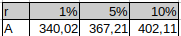
- How much money (\(K_0\)) do I have to put in a savings account today so that I can withdraw \(100 \ Euro\) every year?
Answer:
\[\begin{align*} 100\cdot \sum_{t=1}^{ \infty } \frac{1}{(1+r)^t}&=100 \cdot [ \frac{1}{1-(1/(1+ r))}- \frac{1}{(1+r)^0}] \\ & =100 \cdot [ \frac{1}{(1+r-1)/(1+r)}-1]=100 \cdot [ \frac{1+r}{r}-1]= \frac{100}{r}.\\ &(Corollary~3.1)\end{align*}\]
For different interest rates \(r\), the required investment amount is:
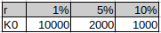
3.4.1.2 Harmonic series\(^\ast\)
Definition 3.8 (Harmonic series) The harmonic series is given by \(h_n=\sum_{t=1}^{n} \frac{1}{t}\) .
Although the underlying sequence \((1/t) \ _ {t \in \mathbb{N} }\) converges, the series diverges.
Example 3.12 (Collecting Coupons)
Source: https://en.wikipedia.org/wiki/Coupon_collector%27s_problem
In probability theory, the ‘coupon collector’s problem’ describes “collect all coupons and win” contests. It asks the following question:
If each box of a brand of cereals contains a coupon, and there are \(n\) different types of coupons, what is the probability that more than \(t\) boxes need to be bought to collect all \(n\) coupons?
An alternative statement is: Given \(n\) coupons, how many coupons do you expect you need to draw with replacement before having drawn each coupon at least once?
The mathematical analysis of the problem reveals that the expected number of trials needed grows with \(n\). For example, when \(n=50\) it takes about \(225\) trials.
Calculation: \[50(1 + 1/2 + 1/3 + ... + 1/50) = 224.9603\approx 225\] is the expected number of trials to collect all \(50\) coupons.
-
Calculating the expectation Let time \(T\) be the number of draws needed to collect all \(n\) coupons, and let \(t_i\) be the time to collect the \(i\)-th coupon after \(i-1\) coupons have been collected. Then \(T=t_1 + \cdots + t_n\). Observe that the probability of collecting a new coupon is \(p_i = \frac{n - (i - 1)}{n} = \frac{n - i + 1}{n}\) Therefore, \(t_i\) has geometric distribution with expectation \(\frac{1}{p_i} = \frac{n}{n - i + 1}\). By the linearity of expectations we have:
\[\begin{align} \operatorname{E}(T) & {}= \operatorname{E}(t_1 + t_2 + \cdots + t_n) \\ & {}= \operatorname{E}(t_1) + \operatorname{E}(t_2) + \cdots + \operatorname{E}(t_n) \\ & {}= \frac{1}{p_1} + \frac{1}{p_2} + \cdots + \frac{1}{p_n} \\ & {}= \frac{n}{n} + \frac{n}{n-1} + \cdots + \frac{n}{1} \\ & {}= n \cdot \left(\frac{1}{1} + \frac{1}{2} + \cdots + \frac{1}{n}\right) \\ & {}= n \cdot h_n. \end{align}\]
-
The above can be modified slightly to handle the case when we’ve already collected some of the coupons. Let \(k\) be the number of coupons already collected, then:
\[\begin{align} \operatorname{E}(T_k) & {}= \operatorname{E}(t_{k+1} + t_{k+2} + \cdots + t_n) \\ & {}= n \cdot \left(\frac{1}{1} + \frac{1}{2} + \cdots + \frac{1}{n-k}\right) \\ & {}= n \cdot h_{n-k} \end{align}\]
 By Cmglee - Own work, CC BY-SA 3.0, https://commons.wikimedia.org/w/index.php?curid=30224158
By Cmglee - Own work, CC BY-SA 3.0, https://commons.wikimedia.org/w/index.php?curid=30224158
Theorem 3.8 (Divergence of Harmonic Series) The harmonic series, given by \(\sum_{t=1}^{n} \frac{1}{t}\) , \(n \in \mathbb{N}\), diverges.
The following applies:
\[\lim\limits_{n \rightarrow \infty } \left| \frac{1/(n+1)}{1/n} \right| = \lim\limits_{n \rightarrow \infty } \frac{n}{n+1} = 1,\]
so that the above theorem 3.6 cannot be used to determine convergence.
Proof
Alternatively, the harmonic series can be written as \(\left(\sum_{k=1}^{2^{n}} \frac{1}{k}\right)_{n \in \mathbb{N}}\) write down.
The sequence \((\frac1k)_{k\in \mathbb N}\) is increasing. If \(n\geq m\), then \(\frac 1n\leq \frac 1m\). Accordingly, we can skilfully estimate the summands downwards and then summarize them: \[\begin{aligned} \sum_{k=1}^{2^{n}} \frac{1}{k} &=1+\color{green}{\frac{1}{2}}+\color{purple}{\left(\frac{1}{3}+\frac{1}{4}\right)}+\color{blue}{\left(\frac{1}{5}+\frac{1}{6}+\frac{1}{7}+\frac{1}{8}\right)}+\\\\ &+\ldots+\color{orange}{\left(\frac{1}{2^{n-1}+1}+\ldots+\frac{1}{2^{n}-1}+\frac{1}{2^{n}}\right)} \\\\ & \ \downarrow \text {bound the summands from above: } \color{purple}{\frac{1}{3} \geq \frac{1}{4}} \text { und } \color{blue}{\frac{1}{5} \geq \frac{1}{6} \geq \frac{1}{7} \geq \frac{1}{8}} \text { und } \ldots \\ & \geq 1+\color{green}{\frac{1}{2}}+\color{purple}{\left(\frac{1}{4}+\frac{1}{4}\right)}+\color{blue}{\left(\frac{1}{8}+\frac{1}{8}+\frac{1}{8}+\frac{1}{8}\right)}+\ldots+\color{orange}{\left(\frac{1}{2^{n}}+\ldots+\frac{1}{2^{n}}+\frac{1}{2^{n}}\right)} \\\\ & \downarrow \ \text{combine the summands} \\ &=1+\color{green}{\frac{1}{2}}+\color{purple}{2 \cdot \frac{1}{4}}+\color{blue}{4 \cdot \frac{1}{8}}+\ldots+\color{orange}{2^{n-1} \cdot \frac{1}{2^{n}}} \\\\ &=1+\underbrace{\color{green}{\frac{1}{2}}+\color{purple}{\frac{1}{2}}+\color{blue}{\frac{1}{2}}+\ldots+\color{orange}{\frac{1}{2}}}_{n \text { summands}} \\ &=1+\frac{n}{2} \end{aligned}\] This means:\(\quad \lim _{n \rightarrow \infty} \sum_{k=1}^{2^{n}} \frac{1}{k} \geq \lim _{n \rightarrow \infty} 1 +\frac{n}{2}=\infty\). This shows us that the sequence \(\left(\sum_{k=1}^{2^{n}} \frac{1}{k}\right)_{n \in \mathbb{N}}\) tends towards infinity and thus diverges.